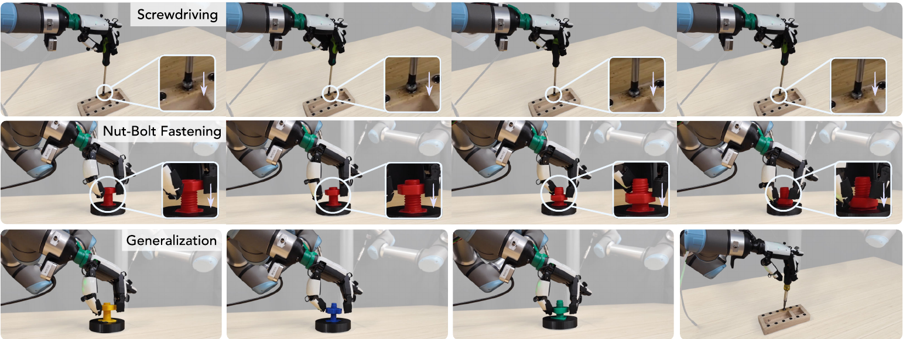
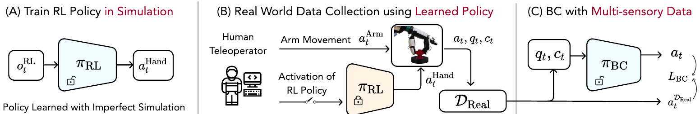
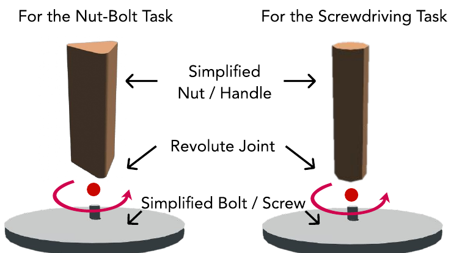
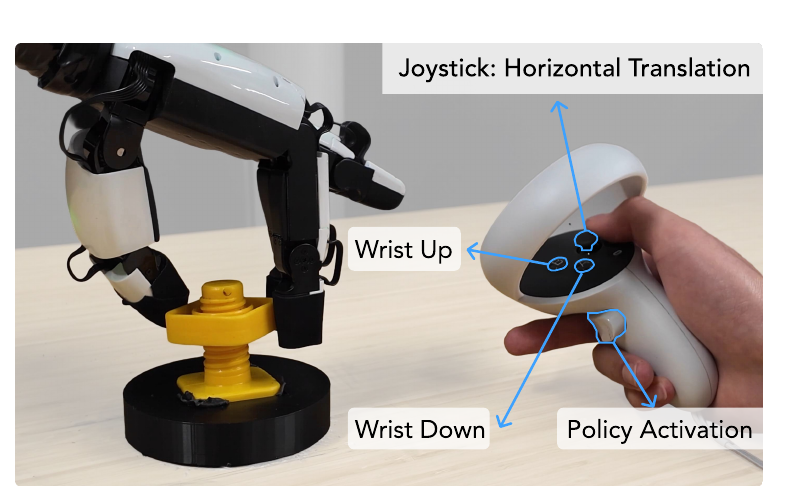
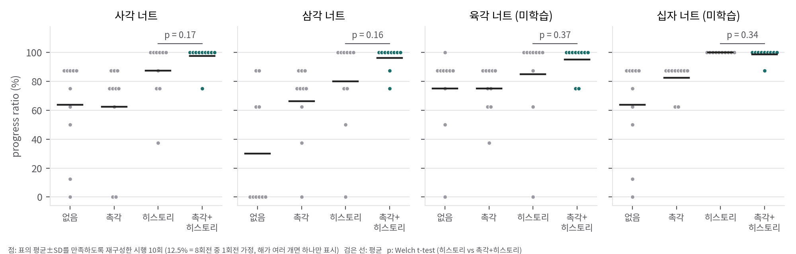

논문 Fig. 1: 드라이버 돌리기(위), 너트 조이기(가운데), 처음 보는 물체로의 일반화(아래).

논문 Fig. 2: (A) 단순화 시뮬레이션 RL → (B) RL 기술을 쓰는 텔레옵 → (C) 촉각 BC.
x-robotics-lab/dexscrew @ 3bde4e3, 텔레옵·배포 x-robotics-lab/skill-teleop @ dec60d6, BC x-robotics-lab/minbc @ b64c53f (README가 지정한 논문 기준 버전). 세 저장소 모두 MIT 라이선스입니다.한 줄 요약: 나사산처럼 시뮬레이션하기 어려운 접촉은 시뮬레이터에서 아예 빼고, 회전 동작만 단순화된 모델(회전 관절 하나)로 RL 학습합니다. 그 정책을 텔레옵의 "손가락 회전 버튼"으로 써서 실제 촉각 데이터를 모으고, BC로 팔과 손가락을 함께 제어하는 촉각 정책을 학습합니다.
논문의 주장은 세 가지입니다.
(A) 시뮬레이션 RL ─ IsaacGym, 8,192 env, XHand 12-DoF, 200 Hz sim / 20 Hz 제어
단순화 물체 = 고정 원기둥 받침 + 회전 관절(revolute)로 연결된 너트·손잡이 (나사산 없음, 축 방향 이동 없음)
oracle(PPO, privileged info) → sensorimotor(proprio 30스텝 히스토리로 latent 추정, DAgger식 증류)
│ JIT로 변환한 회전 정책 π_RL
▼
(B) 기술 기반 텔레옵 ─ Quest 2 컨트롤러: 조이스틱으로 손목 평행이동·yaw·pitch, 버튼으로 손목 상하 이동, 트리거로 π_RL 켜기
기록: a_t = [a_t^Hand(12, π_RL 출력 또는 현재 관절), a_t^Arm(6)], q_t(18), 촉각 c_t ∈ R^{5×120×3}
▼
(C) BC ─ 입력: 최근 K=5 스텝의 (q, c), 촉각은 MLP로 압축 → hourglass encoder → H=16 action chunk
clipActions 1.0입니다. 따라서 관절 목표 속도는 20 Hz에서 최대 약 1.0 rad/s와 0.83 rad/s로 묶입니다.
논문 Fig. 3: 너트와 손잡이를 회전 관절 하나로 근사한 단순화 물체.

논문 Fig. 4: Quest 2로 손목을 조종하고 회전 기술을 켜는 텔레옵 인터페이스.
temporal_ensemble_mode="avg")을 씁니다. 논문 본문에는 언급이 없습니다.| 촉각 | 히스토리 | 사각 | 삼각 | 육각(미학습) | 십자(미학습) |
|---|---|---|---|---|---|
| 63.8±33.1 | 30.0±39.6 | 75.0±29.5 | 63.8±33.1 | ||
| ✓ | 62.5±33.9 | 66.3±27.7 | 75.0±16.7 | 82.5±10.5 | |
| ✓ | 87.5±20.4 | 80.0±32.9 | 85.0±32.2 | 100±0 | |
| ✓ | ✓ | 97.5±7.9 | 96.3±8.4 | 95.0±10.5 | 98.8±4.0 |
직접 sim-to-real의 한계: 너트는 돌지만 내려가지 않습니다. 팔이 움직이지 않고 나사산도 시뮬레이션되지 않았기 때문이고, 그래서 수치를 보고하지 않았습니다.
| 방법 | 진행률 (%) | 시간 (s) |
|---|---|---|
| 직접 sim-to-real | 41.6±26.2 | 완주 없음 |
| Expert replay (수집 데이터 open-loop 재생) | 50.8±19.3 | 완주 없음 |
| BC (없음) | 69.2±35.3 | 266±92 |
| BC + 촉각 | 67.6±35.7 | 264±77 |
| BC + 히스토리 | 87.5±18.6 | 195±45 |
| BC + 촉각 + 히스토리 | 95.0±13.2 | 188±25 |
privileged info를 쓴 oracle이 가장 좋았고, asymmetric actor-critic(critic만 privileged)이 그다음, privileged info를 전혀 쓰지 않은 경우가 가장 나빴습니다. 학습을 더 오래 해도 격차가 줄지 않았다고 보고합니다.
03_analysis.md §1에서 재계산)04 D5).04 D1, 상위 코드 penspin과 대조해 확인). 따라서 Fig. 7의 "privileged info가 중요하다"는 결과는 "동역학 파라미터 식별"(RMA식 해석)이 아니라 "너트 회전 상태와 손끝 상태 관측"의 효과로 다시 읽어야 할 수 있습니다. 다만 논문 실험에 이 코드 버전이 쓰였는지는 확인할 수 없습니다.04 D3).GPU 없이 할 수 있는 검증만 했습니다. 스크립트와 결과 파일은 다음과 같습니다.
analysis/stats_check.py → stats_check_results.jsonanalysis/plot_stats.py → report/figures/stats_nut_dots.pnganalysis/priv_layout_check.py → priv_layout_{screwdriver,nutbolt}.json
| 비교 | 너트별 Welch p | 4종 합산 (n=40) |
|---|---|---|
| 촉각+히스토리 vs 히스토리 | 0.17 / 0.16 / 0.37 / 0.34 | 순열 p 0.042–0.046, Mann-Whitney p 0.10–0.36 |
| 촉각 vs 없음 | 0.93 / 0.03 / 1.00 / 0.12 | |
| 히스토리 vs 없음 | 0.07 / 0.007 / 0.48 / 0.007 | |
| 드라이버: 촉각+히스토리 vs 히스토리 | 0.31 | |
| 드라이버: BC(없음) vs expert replay | 0.17 |
결론:
코드의 규칙을 그대로 재현해 보면, oracle 정책이 실제로 받는 벡터에서 각 항목이 살아남는 비율은 다음과 같습니다(04 D1).
| 항목 | 드라이버 | 너트 |
|---|---|---|
| 물체 위치, 스케일, 질량, 마찰 | 0 / 6 | 0 / 6 |
| 물체 무게중심 | 2 / 3 | 2 / 3 |
| 물체 각속도, hand scale, 너트 접촉 | 0 / 5 (값을 쓰는 코드가 아예 없음) | 0 / 5 |
| 물체 자세·선속도, 손끝 상태(5개), 너트 위치·회전각·회전속도, 반발계수, 나사 마찰 | 전부 보임 | 전부 보임 |
| PD 게인, 손 관절·자세·위치 | 사용 안 함 | 전부 보임 |
함의:
<equality><joint joint1="nut_z" joint2="nut_rot" polycoef="0 k 0 0 0"/> 한 줄로 직선형 결합을 표현합니다. 그러면 "회전 + 하강"까지 시뮬레이션에서 학습한 정책을 텔레옵 기술로 쓸 수 있어, 사람의 부담이 더 줄어들 것으로 예상합니다(검증되지 않은 가설).dexscrew @ 3bde4e3, skill-teleop @ dec60d6, minbc @ b64c53f(README가 지정한 논문 기준 버전)| 논문 | 구현 위치 | 일치 여부 |
|---|---|---|
| 단순화 물체 (회전 관절, 받침 고정) | assets/screw/*, xhand_hora.py:1180 fix_base_link=True |
✅ |
| 행동 a = η·f + a_{t−1}, PD 토크 제어 | configs/task/*.yaml action_scale 0.05 / 0.04167, pgain 3, dgain 0.01, controlFrequencyInv 10(20 Hz) |
✅ |
| 보상 항과 가중치 (Table IV) | xhand_hora.py:672-730, compute_hand_reward |
✅ 가중치 일치. 단 D3 참조 |
| 과속 페널티 커리큘럼 7.5→15 rad/s | 드라이버 yaml angvelPenaltyThres: [7.5, 15.0, 3e7, 6e7] |
✅ |
| 종료 조건 (거리, 정체, 무접촉) | check_termination (xhand_hora.py:878-915) |
✅ 거리 임계값은 스크립트에서 덮어씀: oracle 너트 0.07, 드라이버 0.1, student 드라이버 0.15. 그 밖에 나사 관절 한계 근처에서 리셋하는 조건이 추가로 있음 |
| 랜덤화 (Table V) | yaml randomization |
✅ 수치 일치 |
| PPO 하이퍼파라미터 (Table VI) | configs/train/*.yaml |
✅ (lr 5e-3, horizon 12, minibatch 16384, γ 0.99, λ 0.95, clip 0.2, kl 0.02). 단 max_agent_steps 1e10이라 학습 종료 시점은 수동 |
| Sensorimotor 증류 L = ‖a−â‖² + ‖z−ẑ‖² | algo/ppo/padapt.py:159-170 |
✅ (행동은 [−1,1]로 clip한 뒤 비교) |
| Student env 48개 (Table VII) | scripts/*_student_padapt.sh numEnvs=48 |
✅ |
| 촉각 5×120×3 = 1800 | minbc/configs/base.py xhand_tactile_input_dim 1800 |
✅ |
| BC K=5, H=16, hourglass, 200 epoch | minbc 기본값은 obs_horizon 1, act_horizon 8, action_decoder mlp, num_epoch 30 |
⚠️ 논문 설정을 담은 실행 스크립트나 설정 파일이 공개되지 않음 |
| # | 내용 | 영향 |
|---|---|---|
| D1 | Privileged info 인덱스 겹침 (버그). xhand_hora.py:1024-1057에서 앞의 5개 항목(물체 위치·스케일·질량·마찰·무게중심)을 0–9 칸에 고정한 뒤, 나머지 항목을 start_index = 0부터 다시 배치합니다. 상위 코드 penspin(allegro_hand_hora.py:836)은 start_index = 9입니다. 매 스텝 동적 항목(물체 자세·선속도 등)이 0–9 칸을 덮어쓰므로, oracle은 질량·마찰·스케일·위치를 보지 못합니다. |
03 §2. 논문 Table III과 Fig. 7의 해석이 달라질 수 있습니다. 논문 실험에 이 버전이 쓰였는지는 확인할 수 없습니다. |
| D2 | obj_angvel, hand_scale, nut_contact는 차원만 잡혀 있고 _update_priv_buf 호출이 없습니다. 다른 항목에 덮어써지지 않은 칸은 항상 0입니다. |
Table III에 있는 "너트 접촉 지시자"와 "물체 각속도"는 실제로는 전달되지 않습니다. |
| D3 | λ_pc-z 항은 상수입니다. 물체 point cloud z 범위가 3 cm를 넘으면 페널티를 주는데(xhand_hora.py:714-717), 물체 받침이 고정되어 있어서 point cloud가 에피소드 안에서 회전하지 않습니다(드라이버는 리셋 때 ±5° 기울기만 무작위). 즉 행동과 무관한 상수 보상입니다. 같은 위치에 계산만 하고 쓰지 않는 reverse_penalty도 있습니다. |
학습에 미치는 영향은 작습니다. 상수 음의 보상은 종료를 약하게 유도할 수 있지만 회전 보상(가중치를 곱하면 최대 10–24/step)에 비하면 작습니다. 본문에는 정의가 없습니다. |
| D4 | Oracle이 물체 point cloud(100점)를 입력으로 받습니다 (use_point_cloud_info: True, point_mlp [32,32,32]). 본문과 Table III에는 없고, 저장소 README에만 "privileged information and point-clouds"라고 적혀 있습니다. |
물체 모양 정보가 oracle에 직접 들어갑니다. 서로 다른 너트 모양에 따른 gait 차이의 원천일 수 있습니다. |
| D5 | BC 데이터 변환(skill-teleop/scripts/convert_to_bc_dataset.py)에는 성공 시행만 남기는 필터가 없습니다. 폴더별 앞뒤 구간 자르기와 깨진 파일 제외만 합니다. |
논문이 "BC > replay"의 근거로 든 filtered BC 설명이 공개 파이프라인과 맞지 않습니다(수동 선별 가능성은 배제할 수 없음). |
| D6 | 배포는 겹치는 chunk를 균등 평균하는 temporal ensembling을 씁니다(run_env.py:356, zmq_server_client.py:139). |
본문에 없는 장치입니다. 매끄러움에 기여할 수 있습니다. |
| D7 | Oracle 학습 step 수: 본문은 1.5×10⁹, Table VI와 Fig. 7은 3×10⁹입니다. | 표기 불일치 |
| D8 | Table III은 손끝 2개 기준 97차원이지만, 코드는 fingers_num = 5라서 드라이버 84차원, 너트 127차원입니다(analysis/priv_layout_*.json). |
표기 불일치 |
| D9 | screw_joint_friction은 항상 0.2로 고정해서 기록합니다(xhand_hora.py:285). |
정보량이 없는 privileged 항목입니다. |
dexscrew/docs/install.md에 있습니다.번호 [n]은 논문의 참고문헌 번호입니다. 각 논문을 별도로 열어 검증하지는 않았습니다.
Hora [5] (CoRL 2022) Allegro, 회전 관절 없는 손 안 물체 회전, oracle → proprio 히스토리 적응(RMA [11] 방식)
└ General in-hand rotation with vision and touch [17] (CoRL 2023) 시각과 촉각 추가 (촉각은 proxy 표현)
└ Lessons from learning to spin pens [13] = penspin (CoRL 2024) 시뮬레이션 oracle → 실제 replay로 데이터 수집 → BC로 미세조정
└ Twisting lids off with two hands [44] (CoRL 2024) 병뚜껑을 회전 관절과 휴리스틱 마찰로 근사
└ Learning visuotactile skills with two multifingered hands [32] 텔레옵 + 촉각 BC
└ ★ DexScrew 회전 관절로 단순화한 RL 기술 + 그 기술을 쓰는 텔레옵 + 촉각 BC
코드 계보: README에 따르면 DexScrew 코드는 penspin, Hora, IsaacGymEnvs를 기반으로 합니다. privileged info 인덱스 버그(04 D1)는 penspin의 start_index = 9가 0으로 바뀐 데서 생겼습니다.
penspin과의 차이: penspin [13]도 "시뮬레이션 정책으로 실제 데이터를 모으고 BC로 학습"하는 구조였지만, 그때는 시뮬레이션 정책을 그대로 replay했습니다. DexScrew는 정책을 사람이 켜고 끄는 기술 버튼으로 만들고 팔은 사람이 움직이게 해서, 시뮬레이션에 없는 축(하강)을 사람이 채우도록 했습니다.
| 역할 | 선행연구 | 이 논문에서의 쓰임 |
|---|---|---|
| Privileged 학습 | Learning by Cheating [45], RMA [11] | oracle → sensorimotor 증류 |
| 증류 | DAgger [47] | 행동 + latent 손실 |
| RL | PPO [46], IsaacGym [6] | 8,192 env |
| 도메인 랜덤화 | Peng et al. [7], OpenAI [1] | 외력 2.0m, 확률 0.25 (OpenAI [1]의 설정을 따름) |
| BC | ACT [21], Diffusion Policy [20] | action chunking (H=16) |
| 정규화 | LBM [50] arXiv:2507.05331 | 관측 정규화 방식 |
| 네트워크 | Stacked Hourglass [49] | hourglass encoder |
| 해석 | Filtered BC [51] (Kumar et al., ICLR 2022) | BC가 replay보다 나은 이유로 인용 (03 §4) |
| 비교 | Asymmetric actor-critic [52] arXiv:1710.06542 | Fig. 7 baseline |
| 방법 | 접근 | DexScrew와의 차이 |
|---|---|---|
| DexNDM [36] arXiv:2510.08556 | 실제 상호작용으로 관절별 신경 동역학 잔차 모델을 만들어 sim-to-real 간극을 보정 | 동역학을 보정하는 쪽. DexScrew는 동역학을 고치지 않고 데이터로 우회함 |
| DexterityGen [37] arXiv:2502.04307 | 시뮬레이션 정책을 안정화 제어기로 쓰고 텔레옵을 결합 | 촉각을 쓰는 자율 정책을 만들지 않음 |
| Kumar et al. [38] | 확산 기반 접촉 탐색 + 궤적 최적화로 드라이버 회전 | 모델 기반 |
| FORGE [39] | 힘 기반 탐색으로 sim-to-real, 평행 그리퍼 | 다지 손이 아니고 재파지가 없음 |
| Transic [40] | 사람의 개입으로 sim-to-real 정책을 실제에서 보정 | 단순한 엔드이펙터 |
| Sim-and-real co-training [41] | 시뮬레이션과 실제 데이터 공동 학습 | 비전 기반 |
03 §3).